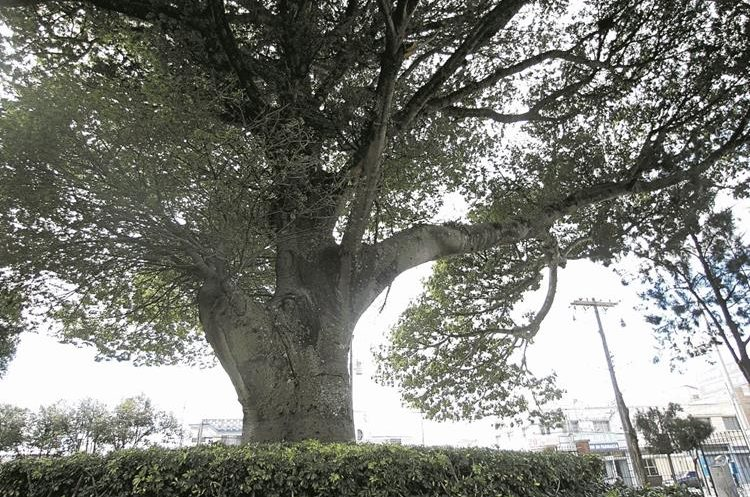
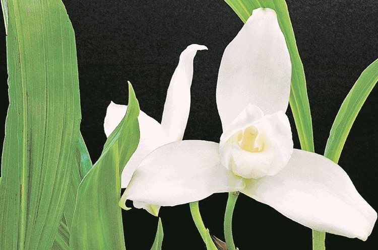
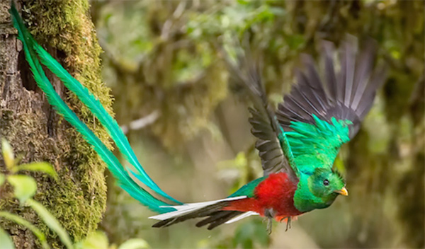
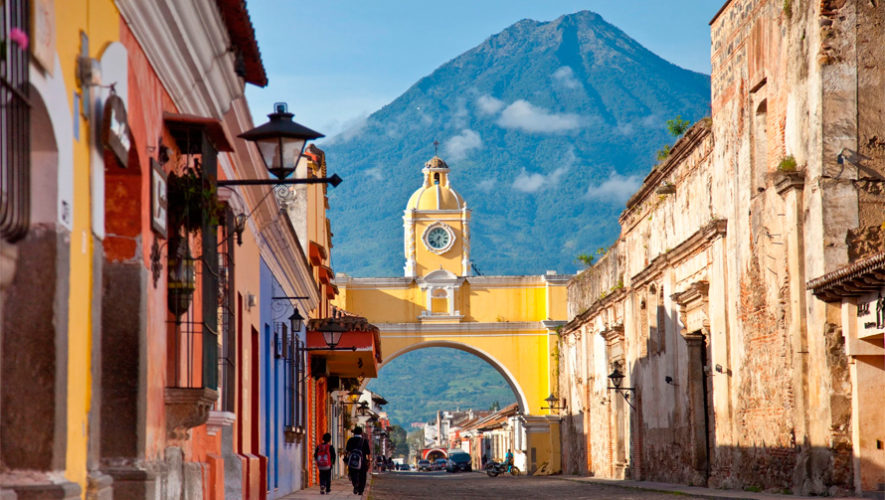

Guatemala
Historia
Guatemala, un país de América Central al sur de México, tiene volcanes, bosques tropicales y antiguos sitios mayas. La capital, Ciudad de Guatemala, cuenta con el imponente Palacio Nacional de la Cultura y el Museo Nacional de Arqueología y Etnología. Antigua Guatemala, al oeste de la capital, contiene edificios coloniales españoles preservados.
Extensión territorial
La extensión territorial de Guatemala es de 2253 km², lo que la convierte en el Área metropolitana más extensa y con mayor número de habitantes de América Central.
Símbolos patrios
La Ceiba
Monja Blanca
El Quetzal
Departamentos
Alta Verapaz, Baja Verapaz, Chimaltenango, Chiquimula, El Progreso, Escuintla, Guatemala, Huehuetenango, Izabal, Jalapa, Jutiapa, Petén, Quetzaltenango, Quiché, Retalhuleu, Sacatepéquez, San Marcos, Santa Rosa, Sololá, Suchitepéquez, Totonicapán y Zacapa.
Lugares turísticos
Antigua Guatemala
Semuc Champey